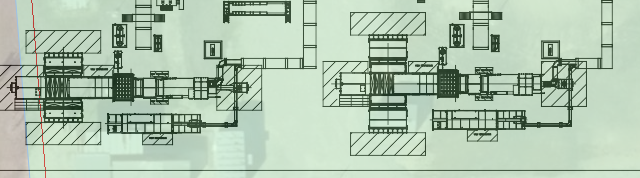
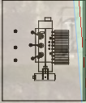
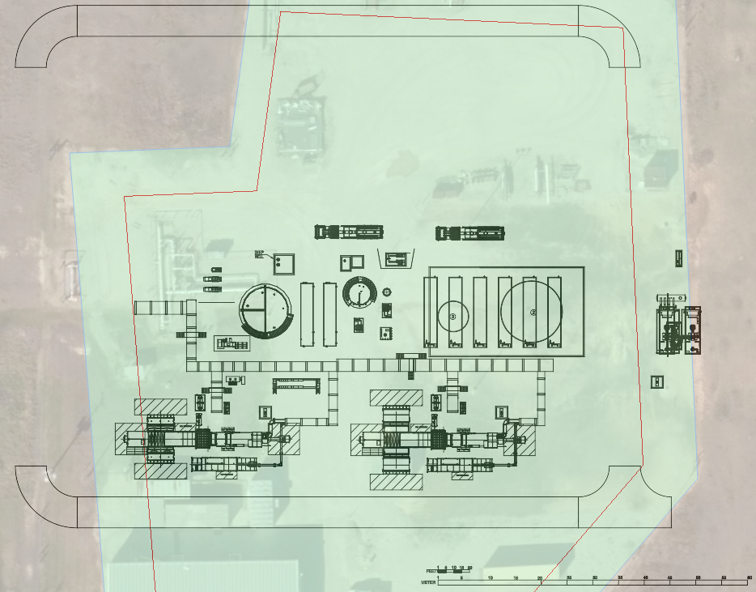
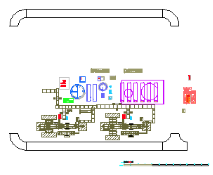

import os import sys import module_CreateProject import module_DeleteProject import module_CreatePolygonInTexas import module_CommonImagesSet import module_PublishDrawing import module_SaveProject import module_ReopenSavedProject nameOfProject = "Test Delete ZoomToFit And Save" if(1): # First delete existing project if any. module_DeleteProject.deleteProject(nameOfProject) # Create new project. module_CreateProject.createProject(nameOfProject) # Create a polygon. module_CreatePolygonInTexas.createPolygonInTexas() # Polygon is done. Go to Forge. module_CommonImagesSet.clickOnMapModelSlider() wait(5) module_CommonImagesSet.fitToView() #confirm if not exists(Pattern().similar(0.35)): Debug.log("Something went wrong in Forge View") module_DeleteProject.deleteProject() # Test SACLING BY UI. # First move three road blocks to North. truckLocation = find(module_CommonImagesSet.unloadingTruckImg) keyDown(Key.CTRL) click(truckLocation.getTarget().offset(-425,26)) #left road arc click(truckLocation.getTarget().offset(0,-26)) #road above click(truckLocation.getTarget().offset(367,31)) #right road arc keyUp(Key.CTRL) transformPartitionLocation = find(module_CommonImagesSet.transformPartition) click(transformPartitionLocation.getTarget().offset(0,0)) #open the transforms. wait(1) click(transformPartitionLocation.getTarget().offset(-22,82)) #transform by edit module_CommonImagesSet.removePreExistingText() type("40.5") # moving by 40.5 meters to north click(transformPartitionLocation.getTarget().offset(33,132)) #NORTH BUTTON click(truckLocation.offset(0,-50)) # Blank Space on canvas. type(Key.ESC) # Now scale with UI gsutImg = find(Pattern().targetOffset(1,0)) keyDown(Key.CTRL) click(gsutImg.getTarget()) click(gsutImg.getTarget().offset(-78,0)) # select left road. click(gsutImg.getTarget().offset(749,0)) # select right road. keyUp(Key.CTRL) # Delete the selected roads. wait(1) type(Key.DELETE) module_CommonImagesSet.fitToView() #validate if not exists(Pattern().similar(0.60).targetOffset(1,0)): Debug.log("Something went wrong While Scaling") module_DeleteProject.deleteProject(nameOfProject); Debug.log("TEST FAILED!!") exit() # Save the drawing. module_SaveProject.saveProject("Saving First Time", "Save Description") # close the project. module_CommonImagesSet.closeProject() wait(1) # Save sometimes take more than 2 mins. Also, in current implementation, the panels are not getting auto updated. # So, checking if save is done in a loop. saveThumbnail = Pattern().targetOffset(1,0) saveComplete = False loopBreaker = 0 eachInterval = 9 # seconds for step in range(20): wait(eachInterval) # check whether thumnail is visible. It indicates successful save. saveComplete = module_ReopenSavedProject.reopenSavedProject(nameOfProject, "v1.2", saveThumbnail, False); if saveComplete: Debug.log("INFO: Save is compelete after ~ %d seconds.", (eachInterval + 5) * step) Debug.log("TEST PASSED!!") break if not saveComplete: Debug.log("ERROR: Save is not complete even after 3 minutes.") Debug.log("TEST FAILED!!")